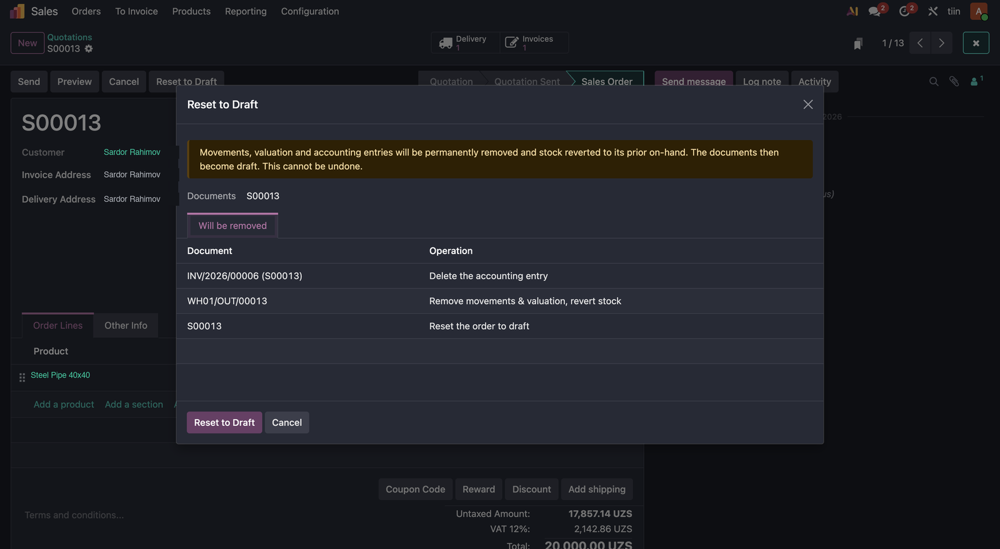

A wrong order was confirmed and everything behind it is already done: the goods moved, the valuation was posted, the invoice was created. Standard Odoo has no way back. This module adds a Reset to Draft button that takes the whole chain apart and puts the document back to draft — after showing you exactly what will be removed.
Sales Order, Purchase Order, Transfer and Manufacturing Order — the same button and the same wizard on each.
Resetting an order also undoes its transfers and its invoice or bill. You do not walk the chain by hand.
Quants are updated per move line, with lot, package and owner, so serial and lot tracking stay correct.
The valuation layer is deleted and the standard price is recomputed, so the average cost returns to its earlier value.
The reconciliation is released before the invoice is removed. The payment stays posted and becomes outstanding again.
Locked period, hashed entry, shared invoice, landed cost, goods already moved on — each is listed with its reason, and the reset is refused.
Everything runs inside one savepoint. If any step fails, the whole reset rolls back — no half-undone document is ever left behind.
Two groups, Sales and Purchase, under their own privilege. The wizard re-checks the group on confirmation, not only on the button.
Every reset posts a message under the real user’s name, so the document carries its own history of being reset.
Nothing is removed until this dialog is confirmed. It names every document in the chain — here the customer invoice, the delivery and the order itself — and says exactly what will happen to each one. A second tab lists the blockers whenever a reset is refused.

| Blocker | Why |
|---|---|
| Locked period | The journal entry’s date falls inside a lock date. Accounting that is closed stays closed. |
| Hash-locked entry | The entry carries an inalterable hash and may not be removed, by design. |
| Shared invoice or bill | The document was merged with another order. Removing it would break that other order. |
| Goods already moved on | The destination no longer holds the quantity to give back. Reset the later step first. |
| Validated landed cost | A landed cost is posted on the transfer. Cancel it, then reset. |
| Linked manufacturing | The order feeds a done manufacturing order. That one is reset first. |
| Multi-lot production | More than one lot or serial was produced. Those are handled one by one, by hand. |
A confirmed order, a done transfer or a done manufacturing order. Press Reset to Draft in the header, or pick several in the list view.
The wizard lists every document in the chain and what will happen to it — entry deleted, movements removed, stock reverted.
If anything stands in the way it appears on its own tab with the reason, and the confirm button is hidden.
Blockers are re-checked, the chain is undone inside one savepoint, the chatter records it, and the document is draft.
| Odoo version | 19.0 (Community and Enterprise) |
| Depends on | sale, sale_stock, sale_mrp, purchase, purchase_stock, stock, stock_account, mrp, account, mail |
| Models added | reset.to.draft.mixin (abstract), reset.to.draft.wizard and its two line models (transient) |
| Models extended | sale.order, purchase.order, stock.picking, mrp.production — through the mixin, no core method is overridden |
| Security | Two groups under a dedicated privilege, access rules per group, and a second check inside the wizard |
| Languages | English, Russian, Uzbek |
| Tests | 12 automated tests covering stock revert, movement removal, chatter, blockers, the wizard and both access groups |
Odoo implementation and custom development
Support: info@todoo.uz
Source code: github.com/MurodjonKadirov7/reset_to_draft